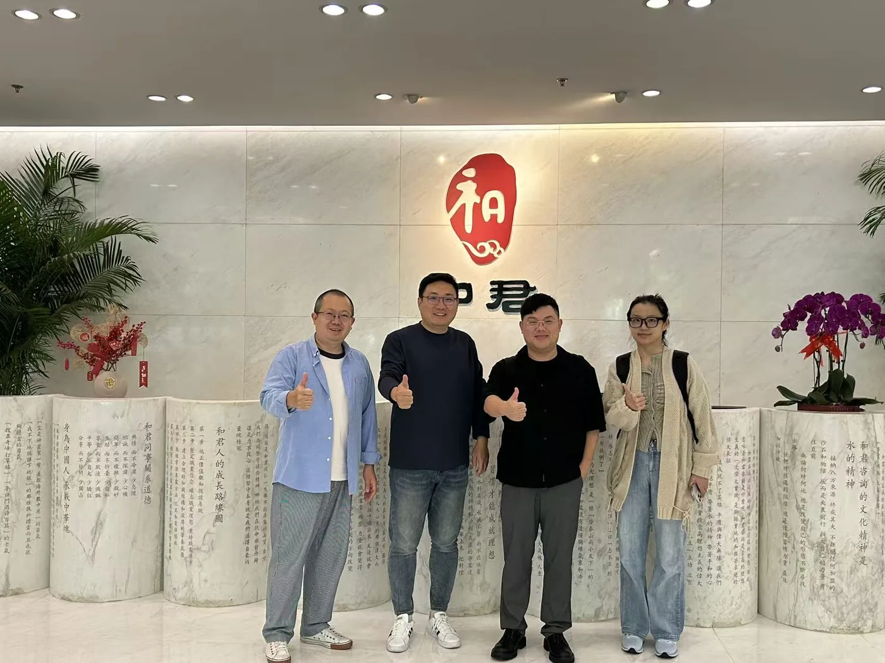

巴基斯坦：中国企业的南亚支点怎么打？
Pakistan — how Chinese companies build the South Asia pivot.

访谈文字稿
说明：本文字稿由视频语音转写整理，目前已整理至约第 36 分钟（全片共约 47 分钟），后半段正在补充整理中，将持续更新。
一、开场：从资源对接聊到自己的创业原点
吕小明（神灯科技创始人，89 年生，苏州大学毕业）：和周总、周一鸣我们在巴基斯坦的关系非常好，我们在巴基斯坦有个重要板块就是新能源，这一边有一些资源后面可以对接。尼日利亚我们也做过大概半年的业务，市场比较熟。这次回来我也要做一下公司的架构，为未来走向资本市场做准备；KOL 方面我们也在做全球布局，基于巴基斯坦人力资源的优势。
先做一下自我介绍：我叫吕红泉，给自己起名叫"语小民"，89 年生，今年 37 岁。苏州大学毕业之后进了一家国企，在苏州地铁干了一年，觉得不是自己想要的生活，就去了湖南一家做工程的企业。我从工地小工做起——半缸筋、拎灰桶、和水泥，晚上学施工和驾驶，慢慢做到这家安装公司的总经理，高峰时同时管着 13 个项目、1000 多名员工。这段经历让我对整个商业和管理有了基本认知。
二、为什么 30 岁前坚决转型出海
15、16 年是中国房地产最后的顶峰，我当时就感觉到建筑行业要进入下坡路。我给自己定了一个目标：30 岁之前必须转型。两条路：要么继续做建安工程但必须"走出去"出海，因为中国城市化进程已经差不多了；要么换行业。到今天我是两者结合了——既换了行业，也成功出海了。
16 年我在北京和长沙投了两家直播公司（娱乐直播 MCN，那时还没有 MCN 这个概念，叫"公会"），进入互联网。18 年一个偶然机会：大学室友在超市遇到他的高中同学，这位同学研究生毕业后加入华为、被派到巴基斯坦，工作三年后跳槽到欢聚时代，旗下产品 Bigo Live 比 TikTok 更早出海、且更早盈利。他需要一个懂行业的人，我就这样过去了。2018 年 10 月我成立神灯科技，11 月派了一个经理带 60 万人民币去巴基斯坦建公司。
从建筑跨到互联网，我踩了很多坑，个人财务也濒临破产，家里人让我回去继续做工程。2019 年我和家里算是"决裂"了，家里断了我的经济来源，我偷偷问妈妈借了 5000 块钱买了一张机票飞到巴基斯坦——落地时一分钱都没有，而巴基斯坦的公司 60 万已经全烧完了，每个月还要亏 1 万人民币。我就是在这种情况下起步的。
三、为什么坚决选巴基斯坦：两个基本假设
我的第一个基本假设：全球化会从过去一两百年的"海权时代"重新回归"陆权时代"。人类历史大部分时间都围绕欧亚大陆贸易交流，两次工业革命后才进入短暂的海权时代；而随着中国高铁技术和"生源（陆运）"布局发展，以铁路为主的陆运效率已不会比海运低多少，经济中心仍会回到这片大陆。一带一路正是为此布局。
从海运看，中国沿海货物要先过东南亚、绕新加坡马六甲海峡（仍由美军控制），对中国航运不利。所以我们从一带一路起就布局了另一条海运线：中巴经济走廊、瓜达尔港（中国租建）、卡拉奇深水港，经吉布提（中国有驻军），再到埃及。今年巴基斯坦和沙特签了军事同盟互保协议，这条路线已经打通。更重要的是贯穿北部到瓜达尔港的中巴铁路今年终于要开建——此前因资金问题搁置，如今"压头行（亚投行）"要来融资，这条铁路完全脱离竞争势力控制、全程掌握在中国手里，行程短、资金周转效率高。
第二个基本假设：中国品牌出海会以巴基斯坦为中转站。巴基斯坦有四大优势——①地缘位置居中；②与中国接壤；③兼具陆运与海运，商业战略纵深更丰富（对比中亚五国加起来才 8000 万人口且都是内陆国，战略纵深不够）；④和中国关系"真铁"，是全天候战略合作伙伴。基于这四点，我选择"压住巴基斯坦"：十年首一国、一年近十国，先把巴基斯坦打透。
四、巴基斯坦本身：一个正在腾飞的巨大市场
巴基斯坦官方人口 2.4 亿，我估计实际已接近甚至超过 3 亿，国土面积近 80 万平方公里（约等于长三角），适合居住面积约占三分之一。人均 GDP 1600 美元——美国处在 1600 时是 1929 年，中国是 2005 年；我觉得现在的巴基斯坦就是"这个时候的中国、十年前的越南、三年前的中亚"。平均年龄 20 岁，人口结构优质。英语是官方语言、穆斯林普遍会阿拉伯语，这两种语言基本覆盖全球主流市场。
过去巴基斯坦穷，有三点原因：①基建差；②本地无优势资源和产业（原是农业国，无工业、无出口、无外汇）；③安全问题（全球恐怖组织温床）。但现在三点都在变：
基建上，2018 年我刚到时智能手机普及率不到 40%，现在已超 70%，今年出货量首次下滑说明进入存量市场；主要城市网购能做到次日达，四季（4G）覆盖率超 60%；智能手机里 55% 是中国品牌。中巴经济走廊 2013 年提出、2015 年启动，是真金白银投入，背后有中国支持——我做过印度、孟加拉、尼日利亚，它们经济都比巴基斯坦好，但基建反而落后巴基斯坦很多。2024 年中巴经济走廊 1.0（国与国建设支援）结束，今年进入 2.0（企业间市场化）。举一个例子：去年年底电动二轮车市场品牌 20 多家，今年此刻已达 103 家，大量企业涌入。中国基建除铁路外已基本收缩，正处于"国退民进"的交界点，正是进场好时机。
安全上，近一年巴基斯坦热度极高：去年底中巴军队联合军演打击俾路支解放军；今年 5 月印巴冲突后，美国把俾路支解放军认定为恐怖组织（此前美国、以色列、印度情报组织是其幕后支持）；随后巴基斯坦与沙特、卡塔尔签军事互保协议；近期又在打阿富汗（巴塔背后是阿塔）。安全问题正在被系统性清除。
产业不足恰恰是机会——现在正是大量企业进入巴基斯坦、抢占产业发展红利期的窗口。
五、两个补充判断
第一，我把巴基斯坦对标韩国：韩国人口少、弹丸小国，却因二战后美元扶持成为发达国家、诞生三星这样的全球企业。中美竞争结果渐明，中国需要"巴基斯坦"扮演当年"韩国之于美国"的角色——有说法称到 2076 年巴基斯坦 GDP 将达全球第七。所以巴基斯坦潜力天花板远超越南和中亚。
第二，巴基斯坦表面混乱（政治动乱、恐怖袭击、治安差），但底层很稳。原因是中—印—巴形成稳定三角：印度内部有分裂风险、需要外部假想敌，一直把中国当竞争对手；但中国未来 30–50 年主要战略对手还是美国，不会亲自下场对抗印度，所以需要一个强大稳定的巴基斯坦；巴基斯坦内部也有分裂风险，同样需要强大稳定的印度作假想敌——"斗而不破"，看着热闹，底层极稳。
六、深扎一线：把自己"变成"巴基斯坦人
我创立神灯科技就给自己定调：走完全市场化路线，在巴基斯坦尽量躲着政府、躲着军队，深扎市场第一线，一条街一条街跑、一个客户一个客户交流。19 年刚到巴基斯坦时既没钱，又把微信里能删的中国人都删了——有三年时间微信好友不超过 40 人；一直住在巴基斯坦人家里，条件艰苦（对面房间常搞 party，厕所三天不消毒就长蘑菇），就这样坚持下来。
七、3+4 商业模式：三条贸易路线
目前我们已在巴基斯坦跑通"3+4"商业模式，有稳定收入和盈利。首先是 3 条贸易路线：
路线一·中国到巴基斯坦。我们是 1688 平台巴基斯坦总代理，本地 B2B 平台 Lankmo.com 直接调用 1688 接口，上有超 4 亿件 SKU，全流程已跑通；2.0 版本本月 10 号测试，上线将同步覆盖孟加拉、斯里兰卡、阿联酋、埃及、哈萨克斯坦。
路线二·本地 B2B2C。线下为主、线上为辅，核心产品分三层：第一层是国家级海外仓（与源通战略合作一座，与一家在巴基斯坦做核电站运营的山东民企合建一座）；第二层是下探到城市的"中巴贸易展示厅"，陈列样品和清库存、用以开发管理经销商网络——我们已有约 1000 多名经销商（多是本地有钱人，因货币贬值风险大、不信任银行，有钱就投资/经销）；第三层是孵化品牌做连锁专卖店，目前已孵化三个品牌：赛哥电动车（巴基斯坦独家全国代理，签约四个月开出 25 家店）、横握储能（家用逆变器和储能电池，以分公司形式与经销商合建）、宝罗天奴轻奢女包（广东品牌，首店 9 号开业）。线下能力上，我把 OPPO 整个团队整合过来（挖了前卡拉奇、拉合尔一把手和 CEO 助理），补上了渠道。
路线三·巴基斯坦销往全球。我们是阿里国际站巴基斯坦唯一的中资渠道商，既帮其招商，也要求我们的经销商入驻、把货销往全球，哪里数据起来就把模式复制过去。此外我们也是南亚本地"淘宝" Daraz（阿里巴巴旗下全资子公司）的服务商和渠道商，具备线上线下全链路渠道能力。
八、3+4 商业模式：四个配套能力
因巴基斯坦贸易软件基础设施仍差，每个环节都要自己搭，于是我们建了四个配套：
① 跨境支付。这是我们的核心能力——与 PingPong 全面战略合作，也是其战略合作伙伴；扎带（Zand）银行巴基斯坦负责人也在对接。我们合理合法合规、且不占用巴基斯坦国家外汇储备的方式把钱弄出来。
② 全链路品牌营销。三个核心能力：一是 16 年投直播公司起家，曾培养 1000 个本地娱乐网红，现直接签约 1000 多个、服务覆盖 5–6 万个，客户包括拼多多海外版 Temu（去年 9 月进巴基斯坦，全部 KOL 业务由我们做）和广电集团（中国大 A 广告第一股）；二是用巴基斯坦人力资源优势（年轻、会英语阿拉伯语、覆盖全球）搞定全球 KOL，如拼多多进马尔代夫、广电在南美东南亚的 KOL 都是我们做，并能拿到 TikTok、Facebook、谷歌、Snapchat 等媒体投流资源；三是团队里有做影视的（电影《无尽攀登》投资方之一），在巴基斯坦建了电影级制作公司，主攻品牌 TVC 和短视频。
③ 物流。与源通战略合作（源通今年进巴基斯坦，在中亚吃到红利，要投大几千万上亿建海外仓、做本地末端配送）。
④ 中巴营销学院。与一位做 K12 教育的老师合建，因为我们在巴基斯坦做的每个业务都是超前全新的，必须自己培养人才。
最终我要用一套基于 AI 的数字化系统把整条链路打通，目前也已接洽百度和京东国际团队。神灯科技核心能力就两个：换汇、卖货；基于这两点不断完善合作伙伴资源，打造生态型平台。过去我们是一家销售公司（自己卖货），现在是一家服务公司——已经帮助很多品牌成功在巴基斯坦落地。
受访嘉宾
吕小明（吕红泉）——神灯科技创始人，89 年生，苏州大学毕业。早年从事建筑安装工程、曾任安装公司总经理（高峰同时管理 13 个项目、千余名员工）。2018 年创立神灯科技并扎根巴基斯坦，从娱乐直播起步，逐步搭建起以"换汇 + 卖货"为核心、覆盖三条贸易路线与四项配套能力的本地化商业生态，是 1688 巴基斯坦总代理、阿里国际站巴基斯坦唯一中资渠道商。其创业观强调"完全市场化、深扎市场第一线"，并提出"十年首一国、一年近十国"的南亚布局战略。
本文字稿由海鑫汇《出海大咖访谈》视频内容转写整理，首发于海鑫汇官方视频号（2025年）。